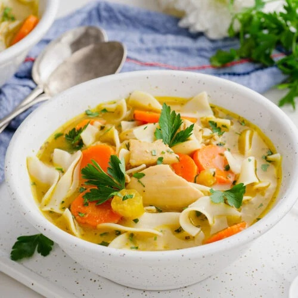

Chicken Noodle Soup

This recipe provides a simple and fast way to make a comforting bowl of chicken noodle soup.
Ingredients:
- Chicken Broth: Provides the base for the soup.
- Chicken Breast: Cooked and shredded.
- Carrots, Celery, and Onion: Classic vegetables for flavor and nutrition.
- Egg Noodles: The noodles for the soup.
- Seasonings: Salt, pepper, and optional additions like parsley for flavor.
Instructions:
- Cook the Vegetables: In a large pot, sauté chopped onion, carrots, and celery until tender.
- Add Broth and Chicken: Pour in chicken broth and bring to a boil. Add shredded chicken.
- Cook Noodles: Stir in egg noodles and cook until tender.
- Season: Add salt, pepper, and any other desired seasonings to taste.
Home